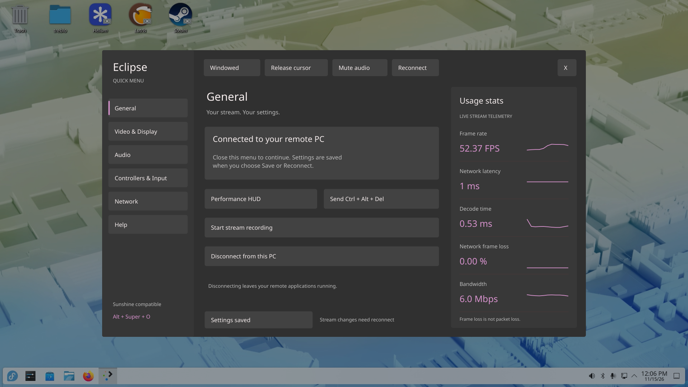
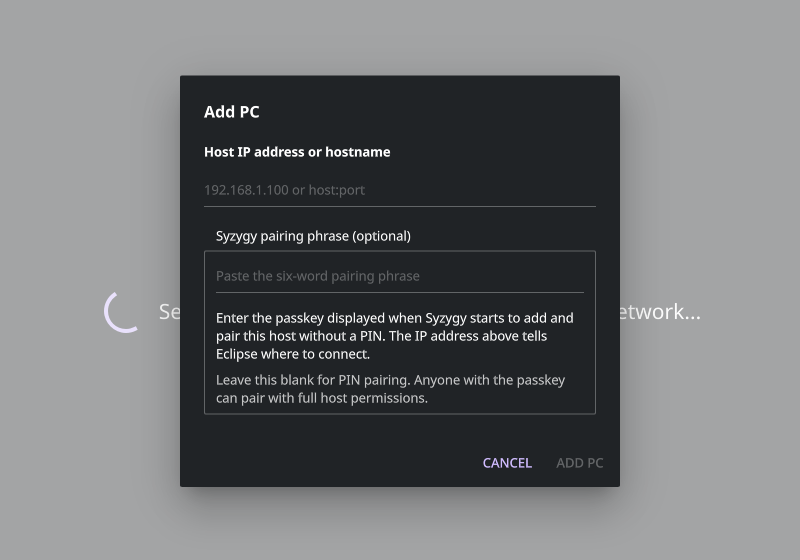
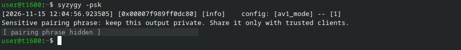
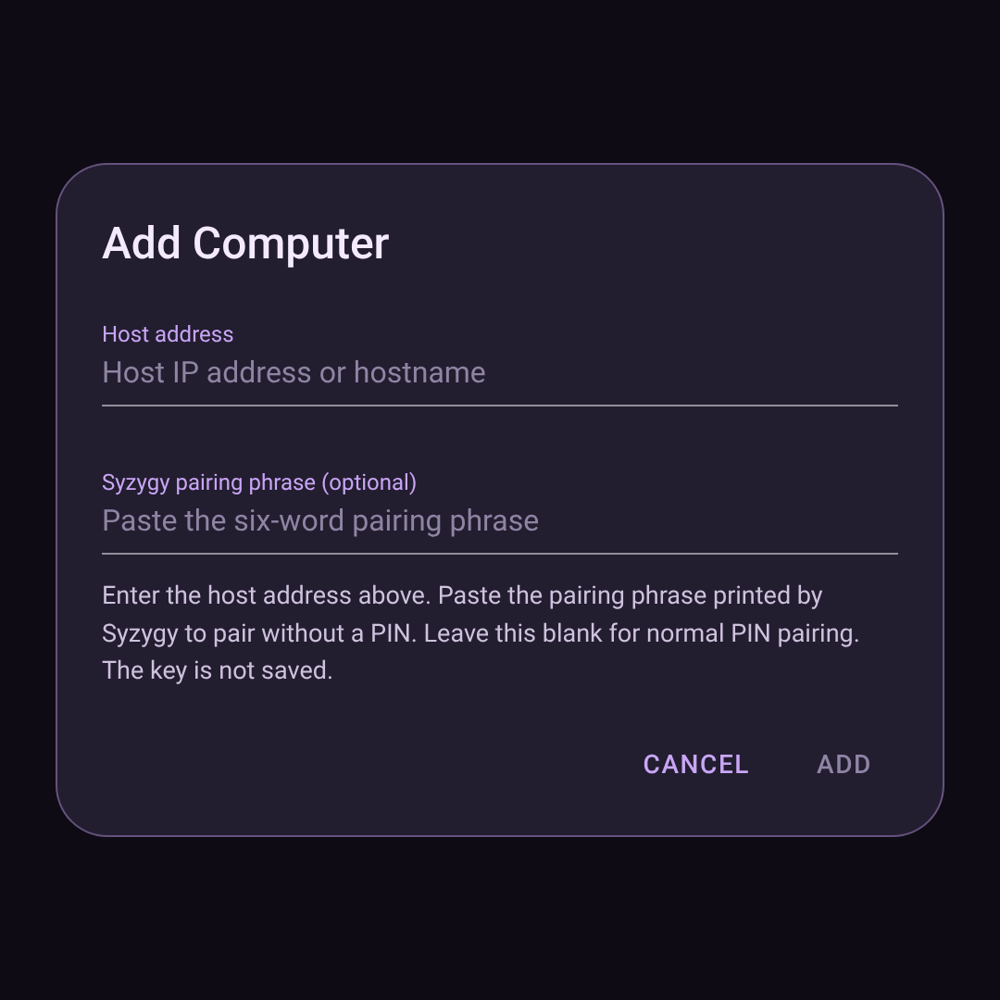
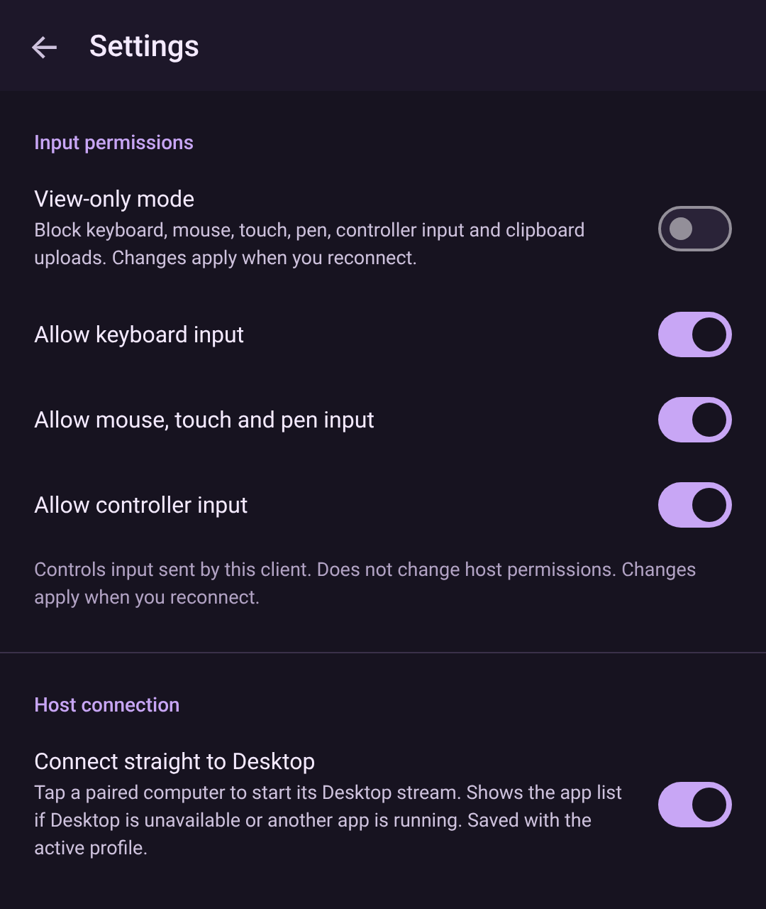
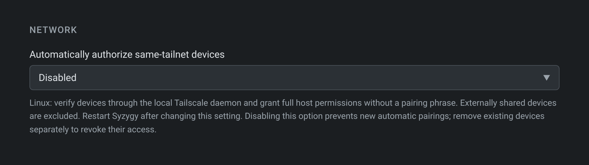

Development builds
Linux virtual desktops that work better over a remote connection.
Syzygy hosts the desktop. Eclipse and Occultation connect to it from another Linux computer or an Android device.
- Host
- Linux
- Clients
- Linux, Android 5.0+
- Based on
- Apollo, Moonlight
- Status
- Early development
curl -fsSL https://raw.githubusercontent.com/NotADeveloper4665/Syzygy/main/scripts/install-syzygy.sh | bash
syzygy -s -auto
syzygy -pskComponents
Three projects that work together: one host and two clients.
-
Syzygy
Host · fork of Apollo · GPL-3.0
A self-hosted streaming host for Moonlight-compatible clients. It adds Linux command-line options, a persistent pairing passkey shown as a six-word phrase, and a headless Wayland desktop mode that runs over SSH with no monitor or graphical login. Password pairing, key rotation, device revocation and Kyber transport are not built yet.
-
Eclipse
Linux client · based on Moonlight
The desktop client. It has an in-session control center, Tailscale discovery, per-PC stream profiles, decoder diagnostics, and Syzygy phrase pairing. It keeps Moonlight's license and upstream notices.
-
Occultation
Android client · fork of Artemide
Eclipse's Syzygy pairing and streaming controls on Android, built on Artemide's mobile decoder work. It can run view-only or allow keyboard, mouse and controller input separately, and can connect straight to the host's Desktop app. It keeps the upstream GPL license and notices.
How they fit
The host and a client are paired once. After that the client reconnects on its own.
-
Run Syzygy on the Linux machine
This is the computer whose desktop you want to reach. It can be headless.
-
Install a client
Eclipse on another Linux computer, or Occultation on Android.
-
Pair with the six-word phrase
Add the host by address or discovery, then enter the phrase from
syzygy -psk. Over your own Tailscale network, the phrase can be skipped. -
Connect
The client saves a certificate, not the phrase, and uses it for every later connection.
Screenshots
The first three are real screenshots from development builds. The ones marked with an asterisk are illustrations.



syzygy -psk prints the pairing phrase. It's hidden here.


* Illustrations, not screenshots. They use the text from each project's source and may not fully represent the current UI.
Install the host
Syzygy on Linux. The source installer supports apt, dnf, zypper, pacman and apk systems.
curl -fsSL https://raw.githubusercontent.com/NotADeveloper4665/Syzygy/main/scripts/install-syzygy.sh | bash
It installs build dependencies, builds the latest main, creates your host key and
prints the start command, syzygy -s -auto. It asks for sudo only to install
packages or write under /usr/local, and leaves the server stopped. Set
SYZYGY_BRANCH to pick a branch or tag. You can
read the script
before running it.
curl -fsSL https://raw.githubusercontent.com/NotADeveloper4665/Syzygy/main/scripts/update-syzygy-dev-rpm.sh | bash
Installs the rolling build from the dev release.
The updater checks the checksum and your Fedora version and CPU, then installs with
dnf. It keeps your configuration and pairing keys and leaves running servers alone.
Start it with /usr/bin/syzygy so you get the RPM, not an older source install.
curl -fsSL https://raw.githubusercontent.com/NotADeveloper4665/Syzygy/main/scripts/install-syzygy.sh | SYZYGY_INSTALL_HEADLESS=1 bash
syzygy -s -auto -headless -psk
Starts a private KDE Wayland desktop that works over SSH. The default size is 1920x1080;
set SYZYGY_HEADLESS_SIZE=2560x1440 to change it. The installer adds the runtime
automatically on Fedora only. Other distributions need the runtime programs from the
README
installed by hand. Reconnect SSH after install if it added you to the render group.
Install Eclipse
The Linux desktop client. Download from the dev release, which carries a Fedora 44 x86_64 RPM, an x86_64 Flatpak, the source, and checksums.
sha256sum -c SHA256SUMS --ignore-missing
sudo dnf install ./moonlight-eclipse-VERSION.x86_64.rpmflatpak install --user ./Eclipse-VERSION-x86_64.flatpak
flatpak run io.github.notadeveloper4665.Eclipse
Use the file names you downloaded in place of VERSION, and install the main RPM,
not the debuginfo or debugsource ones. The Flatpak needs Flatpak set up with Flathub. Its
sandbox hides the host's Tailscale service, so Tailscale discovery and the
microphone, webcam and USB forwarding actions don't work there. You can still connect to a
Tailscale host by typing its address. A versioned
0.5.6 preview
is also available.
Install Occultation
The Android client. It needs Android 5.0 or newer, and installs next to Artemide, Artemis and Moonlight.
Download universal APK All development APKs
The universal APK covers ARMv7, ARM64, x86 and x86-64. The release page also lists CPU-specific APKs. These are debug-signed development builds, not production releases. A signing-key change means older development APKs may need to be uninstalled first.
git submodule update --init --recursive
./gradlew :app:assembleNonRoot_gameDebugPairing
Anyone who holds the phrase can pair with full host permissions. Share it only with devices you trust.
-
Six-word phrase
Works on every connection
Run
syzygy -pskon the host to print the phrase. In Eclipse, add the host, click its card, choose Syzygy pairing phrase and paste it. In Occultation, use Add Computer, or tap an unpaired host and choose Pair with Syzygy phrase. Case is ignored, and spaces and hyphens are interchangeable. The phrase stays the same across restarts and can enroll several clients. -
Automatic over Tailscale
Off by default
Start the host with
-tails, or turn on Network → Automatically authorize same-tailnet devices in the Syzygy web UI. Clients on the host's own tailnet then pair with no phrase. Enter the host's literal Tailscale IP, not a hostname. Linux needs a running Tailscale tunnel and the/run/tailscale/tailscaled.socksocket. Eclipse needs/usr/bin/tailscale, so it works on Linux only, and not in the Flatpak. Occultation needs the Tailscale VPN active on Android 6 or newer. Shared-in nodes are rejected. -
PIN
The standard Moonlight way
Normal PIN pairing and streaming still work. In Occultation, leave the key field blank in Add Computer.
Development builds
All three are early. Builds update when checks pass on main.
-
Syzygy
Rolling RPM channel
A Fedora 44 x86_64 RPM on the dev release. Other distributions build from source. Build logs are in GitHub Actions. Headless mode passes a software-rendered CI test, but still needs testing on real NVIDIA, Intel and AMD hardware.
-
Eclipse
RPM, Flatpak, source
The dev release updates only after the RPM, Flatpak and source checks pass for the same commit.
SHA256SUMSanddev-build.jsonrecord file integrity and where each build came from. -
Occultation
Debug-signed APKs
Download the universal APK or find CPU-specific ones on the dev release. Recording, steady-delay buffering, adaptive bitrate and upscaling are planned, not built.